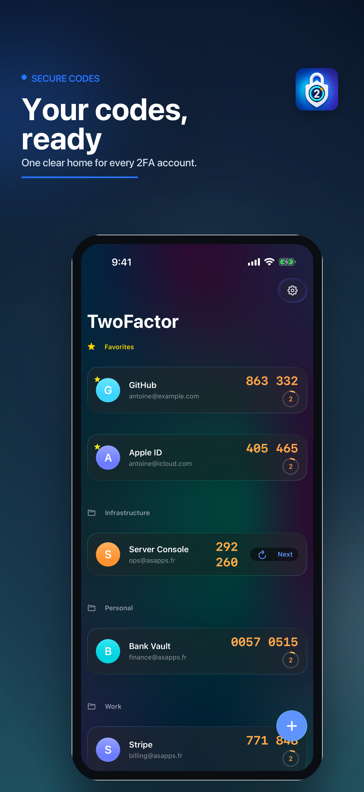
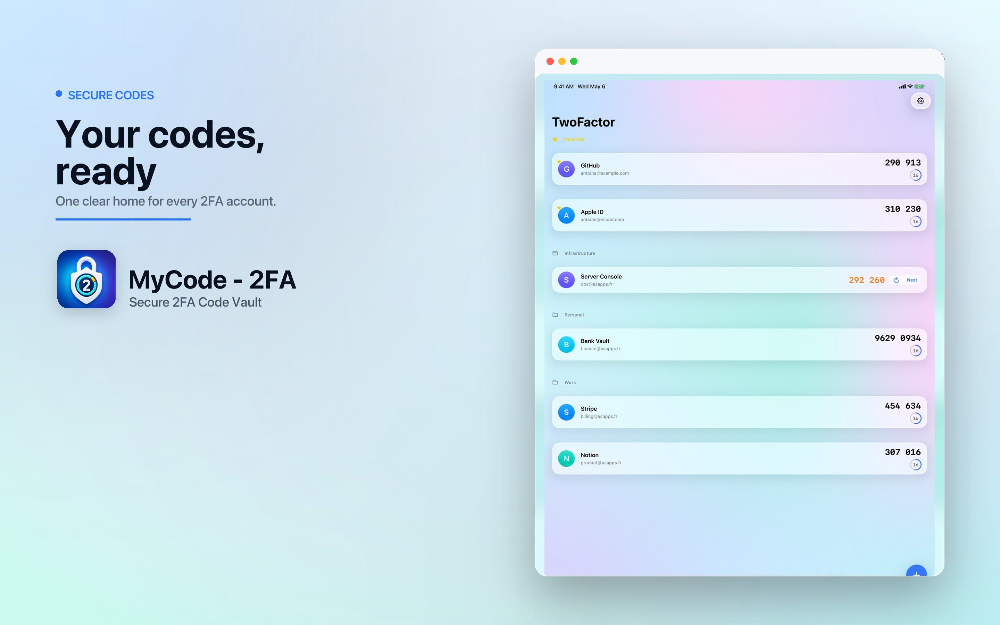
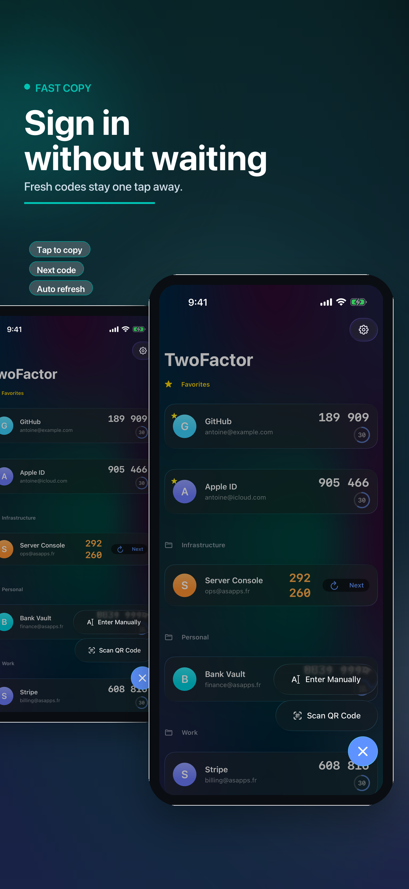
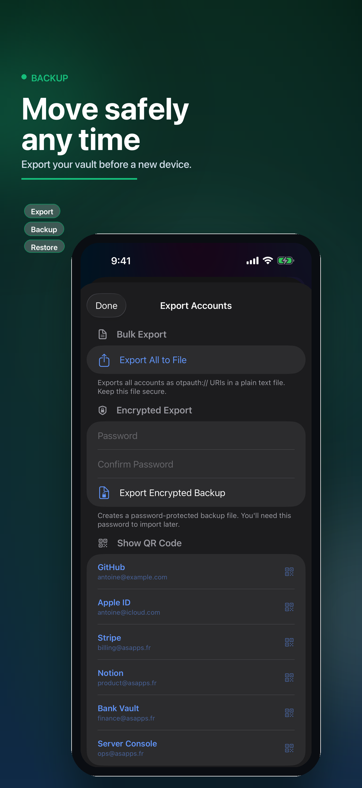
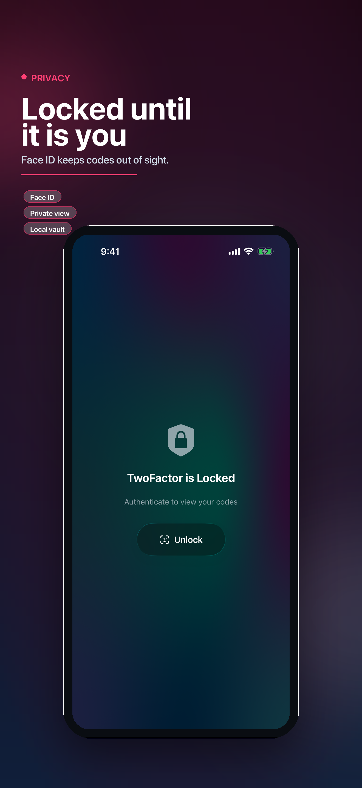

Scan or paste
Add standard otpauth QR codes with the camera, paste otpauth URIs, or enter issuer, account, secret, algorithm, digits, and period manually.
Keep verification codes organized, private, and ready. MyCode supports TOTP and HOTP accounts, QR scanning, AutoFill, Siri shortcuts, biometric lock, and encrypted backup import/export.

The app is built around the practical moments that matter: adding accounts correctly, finding codes fast, filling them into apps and websites, and keeping a recoverable encrypted backup.
Add standard otpauth QR codes with the camera, paste otpauth URIs, or enter issuer, account, secret, algorithm, digits, and period manually.
Search by issuer or account name, place codes into groups, and pin important accounts so the right code is never buried.
Enable MyCode as a one-time-code provider so matching codes can appear in keyboard suggestions after device authentication.
Create password-protected encrypted backups, import them later, or export individual accounts as QR codes when moving devices.

MyCode includes a native macOS app and menu bar access, plus shared data storage for the main app and AutoFill extension. App Intents expose code actions to Siri and Shortcuts while code access still requires local device authentication.
Silent matching when possible, with an account picker fallback when the requested service needs a manual choice.
Get, copy, list, and add-account intents for users who want system-level workflows.
Copy one-time codes from a compact Mac surface without opening the full window.



Verification codes are generated from saved secrets on your device. MyCode does not run an account-code server.
The App Store privacy configuration declares no collected data and no tracking. Camera access is only for QR scanning.
Biometric lock, configurable auto-lock, local authentication for code intents, and encrypted backups reduce account-loss and exposure risk.
MyCode - 2FA is a focused authenticator for people who want fast sign-ins, system integration, and a private recovery path.
Read the privacy policy